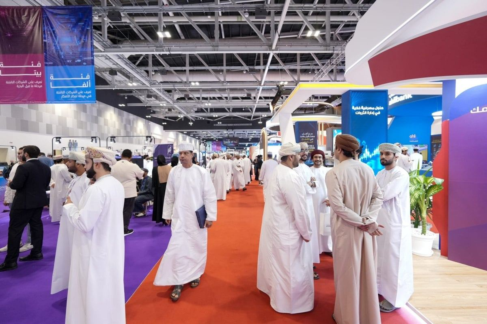

Conferences · Tech
COMEX Global Technology Show 2027 (35th edition)
- Dates
- –
- Venue
- Oman Convention & Exhibition Centre (OCEC), Madinat Al Irfan
- Location
- Muscat, Oman
- Format
- In-person
- Category
- Tech
- Industry
- Technology / Digital transformation
- Organiser
- OITE Global (OCEC lists Arabian Research Bureau LLC as organiser)
- Expected attendance
- 90,000
- Official website
- https://comex-global.com/
About
Oman's flagship technology show; zones include eGovernment, Enterprise Technology and Banking & Fintech (blockchain, payments) plus the COMEX Summit. Oman dates are local (Gulf Standard Time, UTC+4).
Topics: AI, cloud, cybersecurity, e-government, fintech, startups.
Official site: 'Last edition drew 90,000+ visitors, 438+ participating entities and $306M in deals' (previous edition, not a 2027 forecast).
Sources
- Official — https://comex-global.com/
- Official — https://comex-global.com/gx-faq.html
- Official-venue — https://ocec.om/event/comex-global-technology-show-2027/